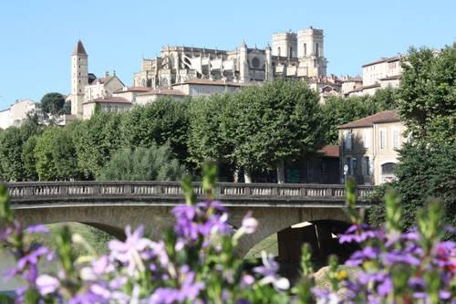

Avant d'être la préfecture du Gers, Auch fut un temps fort de la présence romaine en Aquitaine : au Ier siècle avant notre ère, les légions victorieuses des peuples aquitains y fondent une cité en l'honneur de l'empereur Auguste. Devenue capitale de la province de Novempopulanie, la ville se développe sur les deux rives du Gers, entre la ville basse marchande et la ville haute, siège du pouvoir religieux.

Auch, dominée par les tours de la cathédrale Sainte-Marie
Au Moyen Âge, Auch devient le siège d'un archevêché puissant et la capitale historique de la Gascogne, rivalisant d'influence avec les comtes d'Armagnac voisins. C'est de cette rivalité et de cette identité gasconne affirmée que naîtront, des siècles plus tard, les légendaires Cadets de Gascogne, ces jeunes nobles désargentés partis chercher fortune et gloire au service du roi de France.
La ville actuelle doit beaucoup à sa cathédrale : la première pierre de Sainte-Marie n'est posée qu'en 1489, après que le sanctuaire précédent eut été frappé par la foudre à deux reprises. Le chantier s'étire sur près de deux siècles, si bien que l'édifice mêle harmonieusement le gothique flamboyant de sa nef à la façade classique et aux tours Renaissance achevées en 1680.
Auch conserve aussi le souvenir d'un enfant du pays devenu mythe national : Charles de Batz de Castelmore, dit d'Artagnan, capitaine des Mousquetaires du roi Louis XIV, dont la statue veille aujourd'hui sur l'escalier monumental qui relie la ville basse à la cathédrale.
Une capitale antique mieux documentée. L’Auch romaine, Augusta Auscorum, succède à l’oppidum des Ausques et devient un centre important de la Novempopulanie. Les collections gallo-romaines du Musée des Amériques permettent aujourd’hui de replacer la ville dans cette histoire longue, notamment grâce aux vestiges provenant des environs d’Auch.
Un grand chantier religieux. La cathédrale Sainte-Marie, commencée en 1489 et achevée au XVIIe siècle, mesure environ 100 mètres de long. Son intérêt tient autant à son architecture qu’à ses verrières d’Arnaud de Moles et à son exceptionnel ensemble de stalles sculptées, où se mêlent scènes bibliques, personnages, animaux et motifs fantastiques.
🌿
Visite pratique
⏱️
Durée
Environ une demi-journée
📊
Difficulté
Modérée, escalier monumental (370 marches)
🚗
Accès
Préfecture du Gers, cœur de la Gascogne
🎟️
Cathédrale & trésor
Ouverte toute l'année, visite du trésor payante
✦ Infos pratiques
Cathédrale Stalles en chêne sculptées de 1 500 personnages, verrières Renaissance d'Arnaud de Moles
Escalier monumental 370 marches et la statue de d'Artagnan à mi-parcours
Tour d'Armagnac Ancienne prison du XIVe siècle, 40 mètres de haut
Les pousterles Ruelles et venelles en escalier de la ville médiévale
Musée des Amériques Deuxième collection d'art précolombien de France
Musée du Trésor Plus de 200 objets d’art religieux, vestiges de la cathédrale primitive et accès à d’anciens cachots au pied de la tour d’Armagnac.
Musée des Amériques 19 salles permanentes ; plus de 400 pièces précolombiennes exposées et des collections consacrées à l’histoire de la Gascogne.
Promenade Les promenades Claude-Desbons et Michel-Combe offrent une autre lecture d’Auch, au fil du Gers et au pied de la ville haute.
Mémoire Le Musée de la Résistance et de la Déportation du Gers présente depuis 2023 l’histoire locale de la Seconde Guerre mondiale.
1
La cathédrale Sainte-Marie
Chef-d'œuvre classé au patrimoine mondial de l'UNESCO au titre des chemins de Saint-Jacques-de-Compostelle : stalles sculptées, verrières et buffet d'orgue.
2
L'escalier monumental
Descendez vers le Gers par ses volées de marches ornées de la statue de d'Artagnan, avant de longer la promenade Claude-Desbons.
3
La ville haute et ses pousterles
Maisons à pans de bois, hôtels particuliers et venelles pentues révèlent le tissu médiéval de la cité, entre tour d'Armagnac et musée des Jacobins.
4
Le musée des Amériques
Une collection précolombienne et latino-américaine remarquable, à deux pas de la cathédrale.
5
Alentours gersois
Excursion possible vers le château de Lavardens ou randonnée sur le GR de Pays Cœur de Gascogne.
🏆
Reconnaissance & patrimoine
⛪
Chemins de Saint-Jacques-de-Compostelle
La cathédrale Sainte-Marie est inscrite au patrimoine mondial de l'UNESCO au titre des chemins de Compostelle en France depuis 1998.
⭐ UNESCO
🏛️
Monument historique
La cathédrale est classée au titre des Monuments historiques depuis 1906, comme la Tour d'Armagnac voisine.
Depuis 1906
🎪
Ville de festivals
Auch rythme son année de rendez-vous culturels reconnus : festival de cirque actuel Circa, festivals de musique et de cinéma.
Vie culturelle
⚔️
D'Artagnan et les Cadets de Gascogne
Sur le palier de l'escalier monumental, une statue de bronze veille sur la ville basse : celle de Charles de Batz de Castelmore, dit d'Artagnan, né vers 1613 non loin d'Auch, au château de Castelmore à Lupiac. Entré au service du roi Louis XIV, il devient capitaine-lieutenant de la première compagnie des Mousquetaires avant de trouver la mort au siège de Maastricht en 1673.
C'est le romancier Gatien de Courtilz de Sandras qui, en 1700, publie de très romancées « Mémoires de Monsieur d'Artagnan », inspirant à son tour Alexandre Dumas le personnage de fiction que l'on connaît. Derrière la légende littéraire se cache donc un authentique Cadet de Gascogne, l'une de ces familles nobles mais désargentées du Gers qui envoyaient leurs fils tenter fortune dans les armées royales.
Auch a fait sien cet héritage : la statue du mousquetaire, érigée sur l'escalier monumental, est devenue l'un des emblèmes de la ville, autant que sa cathédrale. Chaque recoin de la vieille ville, des pousterles aux maisons à pans de bois, semble raconter encore cette époque de cape et d'épée.
💬
Le saviez-vous ? Anecdotes auscitaines
⏳
Deux siècles pour une cathédrale
Commencée en 1489, la cathédrale Sainte-Marie n'est achevée qu'en 1680 : le temps du chantier explique le mélange de gothique flamboyant et de Renaissance qui la caractérise.
🪑
Un chœur peuplé de 1 500 personnages
Les 113 stalles en bois sculpté du chœur mettent en scène plus de 1 500 figures, un travail d'ébénisterie exceptionnel du XVIe siècle.
🪜
370 marches vers la ville haute
L'escalier monumental, aménagé au XIXe siècle, relie les quais du Gers à la cathédrale et offre un panorama qui porte, par temps clair, jusqu'à la chaîne des Pyrénées.
🪶
Un chef-d’œuvre aztèque de 1539
Le Musée des Amériques conserve la « Messe de saint Grégoire », tableau de plumes réalisé à Mexico en 1539, témoignage exceptionnel des premiers temps de l’art chrétien en Nouvelle-Espagne.
⚔️
Le d’Artagnan d’Auch date de 1931
La statue de Firmin Michelet installée sur l’escalier monumental est le premier d’Artagnan représenté en pied dans le Gers.
📍
Aux alentours
Château de Lavardens l'un des plus beaux châteaux du Gers, à quelques kilomètres au nord-est d'Auch.
Lupiac village natal de d'Artagnan et château de Castelmore, à environ 35 km au sud-ouest.
Condom capitale historique de l'Armagnac et cité épiscopale, à une trentaine de kilomètres.
GR de Pays Cœur de Gascogne itinéraire de randonnée à travers les paysages vallonnés du Gers.
Pavie, Pessan et Montaut-les-Créneaux complètent la découverte du Pays d’art et d’histoire Grand Auch Cœur de Gascogne, avec villages anciens, églises et patrimoine rural.